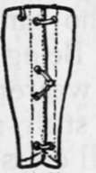
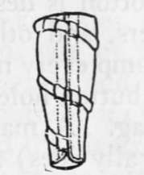
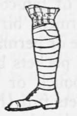

Clothing. Part 3
Description
This section is from the book "Camping And Woodcraft", by Horace Kephart. Also available from Amazon: Camping and Woodcraft.
Clothing. Part 3
Trousers should not be lined; it makes them stiff and hard to dry.
To wear with leggings the " foot breeches " of our infantry, which lace or button in front below the knee, fit better than trousers that must be lapped over; but for wilderness wear I prefer common trousers cut off about six inches below the knee: they are easier to put on and they dry out quicker.
Riding breeches are best for the saddle. They are cut too tight at the knee for foot travel, espedaily for climbing. Knickerbockers are too baggy for the woods: they catch on snags and tear, or throw a man.
Belts
A belt drawn tight enough to hold up much weight is not only uncomfortable but dangerous. It checks circulation, interferes with digestion, and may cause rupture if one gets a fall. If common suspenders are objectionable, then wear the " invisible " kind that go under the overshirt. They prevent chafing, by holding the trousers snug up in the crotch. For ordinary service there is no need of a belt more than an inch wide. A cartridge belt should be worn sagging well down on the hips; or, if a heavy weight is to be carried on the belt (bad practice, anyway), by all means have shoulder-straps for it.
Leggings
Never buy leggings that strap under the instep. The strap collects mud, and it is soon cut to pieces on the rocks. Any legging that laces over hooks will catch in brush or high grass and soon the hooks bend outward or flatten. The present U. S. A. canvas legging (Fig. 91) has only one hook, in front; it is quickly adjusted. The strap puttee (Fig. 92) is better for a woodsman or mountaineer. Leather puttees are suitable only for horsemen ; in walking and climbing they cut one in front and rear of the ankle joint. Genuine pigskin is the only leather that will stand hard service and frequent wettings.
Fig. 91. U. S. Army Canvas Legging.
Fig. 92. Canvas Strap Puttee.
Fig. 93. Woolen Spiral Puttee.
For still-hunting I like spiral puttees (Fig. 93), not spat but plain, as here illustrated. They are strips of woolen cloth with selvage edges, specially woven and 11 formed," which wind round the leg like a surgeon's bandage and tie at the top. Do not wind too tightly. They are pliable, noiseless against brush, help to keep ticks and daggers from crawling up one's legs, and, with the clothing underneath, are a sufficient defense against any snakes except the great diamond-back rattlers. " In experiments, only in rare instances has snake virus stained blotting-paper placed behind two thicknesses of heavy flannel".
German socks, instead of leggings, are good for still-hunting in severe cold weather.
Many dispense with leggings by wearing their trousers tucked inside boots or high-topped shoes. This will do when the woods are dry, but when all the bushes are wet from rain, or from heavy dew, the water runs down inside your shoes until they slush-slush as if you had been wading a creek.
Coats
The conventional American hunting coat of tan-colored cotton is designed primarily for fishermen, bird-hunters, and others who can reach home or permanent camp every night. Being nearly " all pockets but the button-holes," its wearer needs no pouch or game-bag. A man can stuff all the pockets full (he generally does) and still cross fences and slip through thickets without anything catching or dangling in the way. A cravenetted coat of this sort turns rain and keeps out the wind. It is an excellent defence against burrs and briers. It is no heavier than a poncho, and more serviceable for everything but as a ground-sheet or shelter-cloth. These are good points.
On the other hand, the coat is too hot for summer (barring trout fishing), it impedes athletic movements, and, unless sleeveless, it is a poor thing to shoot in, as a gun butt is likely to slip from the shoulder. For summer hikes, canoeing, and big game hunting (except when it is ccM enough for Mackinaws) any coat is a downright nuisance.
Have the coat roomy enough to wear a sweater or thick vest under it. Never mind " fit "— the thing is hideous anyway. Of course, one can wear a modish and well-fitting shooting suit, or the like, in the fields near " civilization," but for wilderness travel it is as outre as a stag shirt and caulked boots would be on Fifth Avenue.
The coat should not be lined. Most linings are so tightly woven that they check ventilation of the skin, and they make a garment hard to dry out.
Sweaters
A sweater, or sweater jacket, is comfortable to wear around camp in the chill of the evening and early morning, and its elasticity makes it a good bed garment when there are not enough blankets. With nothing over it, a sweater is not serviceable in the woods, as it " picks out," " snags," and catches up burrs as a magnet does iron filings.
When you want such a garment at all, you need warmth a-plenty: so get a thick one of good quality, and don't kick at the price. It should have cuffs to draw down over the knuckles, and a wide collar to protect the neck and base of the head. The best colors are neutral gray and brown or tan. A sweater jacket that buttons up in front is more convenient than the kind that is drawn over one's head, but it is not so warm as the latter.
Personally, I usually discard the sweater in favor of a Mackinaw shirt, worn hunting fashion with tail outside. It has all the good points of a sweater, except great elasticity, and has the advantages of shedding rain and snow, keeping out wind, wearing well under hard service, and not picking up so much trash.
Leather Jackets
In the cold dry air of the Far West a buckskin jacket or hunting shirt is often the best outer garment. It keeps out the keenest wind, is pliable as kid, noiseless, less bulky than a sweater or Mackinaw, wears forever, and is proof against thorns and burrs. But when wet it is as cold and clammy as tripe.
Continue to: